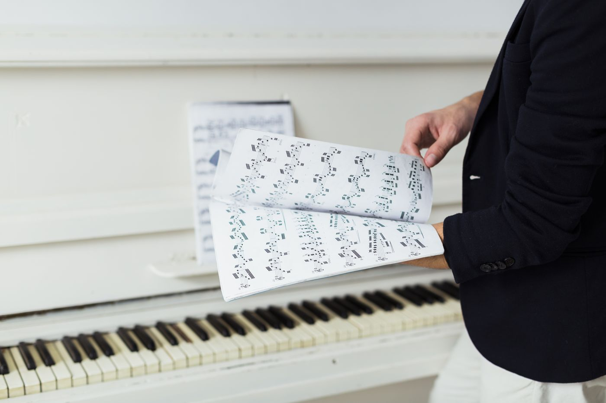

O que guardar de cada música
- Nome e artista, para achar rápido.
- Tom da banda e andamento (BPM), além do compasso.
- Letra, separada em blocos (Verso, Refrão, Ponte).
- Cifra, se a banda usa.
- Link da versão de referência (por exemplo, no YouTube), para todos ouvirem a mesma interpretação.
- Recado do líder: quem canta, como será a entrada, repetições combinadas.

Organizando para encontrar rápido
Quando o repertório cresce, a busca vira essencial. Procure por nome ou artista e filtre por tom, por quem tem multitrack e por quem já está no seu celular. Músicas que a banda toca com frequência ficam mais à mão que as raras.
No Louvor Studio
O repertório do Louvor Studio é uma lista com busca e filtros. Cada música tem uma ficha com tom, andamento, compasso, link da versão, cifra, letra e recado do líder. Um ícone mostra se a música tem multitrack e se já está baixada no seu celular. Quem o líder liberar pode adicionar músicas, com capa e tempo (bater o toque para achar o BPM).
A letra aparece no estúdio, seguindo as partes marcadas. E quando a música entra numa escala, ela aparece com o tom do dia. Veja como isso entra na escala de louvor.
Perguntas frequentes
Posso ter música sem multitrack?
Sim. A música entra no repertório só com tom, letra, cifra e link; a multitrack pode ser enviada depois.
A letra é fornecida pelo app?
Não. Quem adiciona a música coloca a letra. Use só letras que a banda tem direito de usar.
O tom da escala pode ser diferente do da música?
Sim. Cada escala pode usar um tom do dia, sem mudar o tom padrão da ficha.